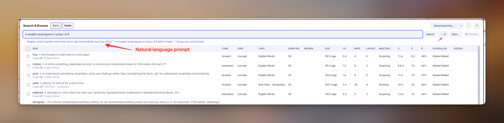

Search Engine¶
Desktop only, Mac only
The Search Engine, Search & Browse and ✨ AI work only in RemNote's desktop app on a Mac, with the AI helper running and paired. They are not available on Windows, Linux, the web app, the iPhone or Android. Everywhere else, Find Rem uses RemNote's own search and the rest of the plugin works as usual.
On the desktop, the plugin can search your knowledge base with a query language modelled on Anki's: every word must match, and you can combine words with or and -, search under a document, or filter by tag, Rem type, Source, slot or property value, card state and review history. Two tools use it: Find Rem, where a ⚡ in the search box means the search engine answered, and Search & Browse, a table of everything a search finds.
The engine runs in the AI helper on your computer, reading RemNote's own database without changing it. On the iPhone, on the web, or with the helper off, Find Rem uses RemNote's search as before, and the keys on this page are read as ordinary words.
Setting it up
- Run the AI helper, version 1.0.231 or later, with
rem_search.py,rem_index.py,rem_browse.py,fsrs.pyandrem_search_ai.pynext to it. - Print its pairing token with
python3 ~/.incremental-remnote/ai_ocr_helper.py --pairing-tokenand paste it in the plugin settings, AI Helper Pairing Token (why a token).
The first time you use a key such as tag: or is:, the helper indexes the knowledge base, which takes about 20 seconds; Find Rem says so and searches the words meanwhile.
Why it finds more¶
RemNote's search, the only one a plugin can call, looks for Rems with any of your words, then keeps the first 1,000 by a ranking that ignores what you typed. A Rem holding every word can be cut before it is shown. In one knowledge base, bow weather wave matched 5,874 Rems on any word and one Rem on all three; that Rem matched the words better than 5,630 of the others, but sat 2,761st on RemNote's ranking, so it was cut.
The search engine runs a real search instead: all your words, against RemNote's whole index, in a few milliseconds.
Simple searches¶
bow weather- finds Rems with both words. Each word matches from its start:
bowalso finds bowsprit, not elbow. bow and weather- the same;
andis optional. bow or bowsprit- finds Rems with either word.
bow (wave or sea)- finds Rems with
bowandwave, orbowandsea. -tug- finds Rems without
tug.bow -tug -pilotexcludes both. -(tug or pilot)- the same as
-tug -pilot. "bow flare"- finds the two words side by side.
w:bow- finds the whole word
bowonly: not bowsprit. under-keel,6.4- words joined by punctuation are searched side by side:
under-keelfinds under keel clearance.
Things to note:
- Words are separated by spaces, and all of them must match.
andbinds tighter thanor:dog cat or mouseis(dog cat) or mouse, as in Anki. - Accents and capitals never matter:
navegacaofinds Navegação. Anki needsnc:for this; here it is always on. - Clozes don't get in the way: cloze markup isn't in the index, so clozed words are searched like any other (Anki needs
sc:). - A reference in a Rem is searched by the name it shows, but RemNote's index keeps it at the end of the Rem's text:
sea margin becomesfinds "[sea margin] becomes useless…", while the phrase"sea margin becomes"doesn't. - Text in a Rem's back (the answer side) is searched too.
Where to search¶
in:"Wärtsilä Encyclopedia of Ship Technology"- searches the document and everything under it. Quotes are needed when a name has spaces.
in:*miguens* radar*matches part of a name:radarunder every document or folder whose name contains miguens. When no document or folder matches, any Rem with that name does (up to 200).in:63ZzPW7lNc3ceJWVy- a Rem id works too.
squat -in:Archive- leaves out everything under Archive.
parent:"Bow flare"- only the direct children of Bow flare.
path:pscpp squatsquatin Rems with pscpp in the name of any Rem above them.
A name shared by several Rems covers all of them. A name that matches nothing says so under the box, and suggests a *.
Tags, kinds and powerups¶
tag:"Anki Card - Standard Mono"- Rems with that tag. RemNote shows powerups as tags, so
tag:Incrementalfinds IncRems too. tag:anki*- Rems with a tag whose name starts with anki.
tag:none- Rems with no tag.
is:concept,is:descriptor,is:portal- Rems of that type.
is:document,is:folder- documents and folders.
is:flashcard,is:image,is:pdf,is:website- Rems with flashcards, images, uploaded PDFs, web pages.
is:incremental,is:dismissed- IncRems, and Rems you dismissed.
is:pdf-highlight,is:html-highlight,is:web-highlight- highlights.
has:tag,has:alias,has:source- Rems with a tag, an alias, a Source.
has:powerup:Video- Rems with that powerup, by name or code.
Sources and references¶
source:"PDF Carlton Marine Propellers and Propulsion, 4e"- Rems with that Rem among their Sources.
source:*M23*- Rems whose Sources include any Rem named with M23. The name is matched only among Rems that are someone's Source, so it is quick.
refs:"Service power margin"- Rems whose text references Service power margin: its backlinks.
refs:*margin*works the same way. alias:"sea margin"- Rems found through one of their aliases.
id:go7LdXuu9hpAZH12G,rzGXXDY2z0yi0Iefg- these Rems.
Slots and properties¶
Every powerup slot and every property of a tag can be searched, like Anki's fields. Write the owner and the name, separated by a dot: the owner is the powerup (its name or code) or the tag that has the property. Spaces, capitals and punctuation in both don't matter.
"Anki Card - Standard Mono.Book:PNA Resistência"- Rems whose Book property, from that tag, is exactly PNA Resistência. As in Anki, a value must match exactly unless it has wildcards.
ankicardstandardmono.book:pna*- the same property, starting with pna.
*.book:*carlton*- a Book property of any tag, containing carlton.
_matches one character. *.chapter:- an empty Chapter.
*.chapter:_*finds one that isn't empty. incremental.priority<20- a number compared:
<,<=,>,>=,=,!=. incremental.nextrepdate<=0- a date compared in days from today:
<=0is today or earlier,=1tomorrow,>=-7the last week onwards.
The plugin's own values have shortcuts:
| Shortcut | Is |
|---|---|
prop:priority<20 |
a flashcard's card priority |
prop:incpriority<=10 |
an IncRem's priority |
prop:incdue<=0 |
an IncRem's next repetition date (days from today): due now |
is:incremental prop:incdue<=0 prop:incpriority<=10- IncRems due now with a priority of 10 or better.
Recent changes¶
added:1- Rems created today.
added:7covers the last 7 days. edited:1- Rems whose text was written today. This counts any change to the text, including ones made by a plugin or a bulk command, as Anki's
edited:does.
Cards¶
A Rem matches when one of its cards does. Card searches written together must hold for the same card: is:due card:cloze is a Rem with a due cloze card, not one with a due card and some other cloze card.
is:due- a card whose next review time has passed. Cards in a paused deck are left out, as RemNote's queue leaves them out.
is:new- a card never answered (or not since its last Reset).
is:review- a card answered at least once since its last Reset.
is:learn-new- a card waiting in RemNote's Learn New queue.
card:forward,card:backward,card:cloze- the card's type.
ml:growing- RemNote's mastery level:
new,acquiring,growing,solidifying,retaining,notyetlearned. prop:due<=-7- next review a week ago or earlier: days from today,
0today,1tomorrow. Unlikeis:due, it compares the date alone, so it counts cards in paused decks too. prop:ivl>=30- an interval of 30 days or more: the days from the last review to the next.
prop:reps>10,prop:lapses>3- answered more than 10 times; forgotten more than 3 times. Both count since the last Reset, and leave out partial reps of list cards, as RemNote's own scheduling does.
prop:s>365,prop:d>=9,prop:r<0.8- FSRS stability (in days), difficulty (1 to 10) and retrievability now (the chance of recalling it today, 0 to 1). They are worked out from the card's history with its own scheduler's weights, as RemNote's Bullet Information panel does, and match it. Cards on an SM-2 scheduler, and cards never answered, have none. After a Reset they follow RemNote's scheduling, which starts over at the Reset; the panel replays the whole history instead, so the two differ for reset cards.
scheduler:vocabulary,scheduler:global- cards on that scheduler: the one assigned to a document above them, or the Global Default. A name matches from its start (
scheduler:vocabularyfinds Vocabulary (FSRS default));*matches any part. is:fsrs,is:sm2- cards whose scheduler is FSRS, or SM-2.
rated:1- answered today.
rated:7covers the last 7 days. rated:7:forgot- answered Forgot in the last 7 days; also
hard,good,easy, or Anki's buttons1to4, andskipfor Too early. introduced:30- first answered in the last 30 days.
cid:Wb4KrNxFckJjwNkAC- these cards.
is:due card:cloze in:"PSCPP" prop:lapses>=3- due cloze cards under PSCPP that you have forgotten three times or more.
is:due prop:r<0.7- due cards you are more likely to have forgotten than not by now; sorted by R in Search & Browse, the most at risk come first.
Suppressed cards¶
Some cards can never come up in a queue. These keys find them, with the same causes, in the same order, as the Suppressed Cards tab of the Weighted Shield:
is:suppressed- a card RemNote won't put in any queue, for any reason.
suppressed:paused(alsois:paused)- inside a paused deck. The nearest deck above decides: an active deck inside a paused one is not paused.
suppressed:ancestor- under a Rem with Disable Descendant Cards.
suppressed:rem- cards switched off on the Rem itself (its Enable Cards toggle, or Disable Descendant Cards on the Rem).
suppressed:table- the same, in a table row or cell: RemNote creates them with cards off.
suppressed:direction- a forward or backward card whose direction is switched off.
suppressed:cloze- a cloze switched off card by card, or with
/Disable All Cloze Cards. suppressed:removed(alsois:not-generated)- the cloze or back side the card came from is gone; its history is kept.
suppressed:other- none of the above.
Each card gets one cause, the first that applies in this order. is:disabled (or Anki's is:suspended) finds every card RemNote won't show except paused ones, which keep their due dates.
suppressed:rem in:"PSCPP"- Rems under PSCPP switched off on purpose: the ones worth a look.
Search & Browse¶
Search & Browse (quick code sb) lists everything a search finds in a table, as Anki's Browser does, and lets you act on it. Desktop app on a Mac only, with the AI helper running. Try it below (example data; the demo knows a subset of the keys):
- Rems or Cards. Rems lists each Rem once. Cards lists the cards the search matched:
is:due card:clozelists the due cloze cards, not every card of those Rems. - Columns: the Rem (front → back, with its path), the card type, its kind (document, concept, IncRem…), tags, card priority, IncRem priority and next date, due date, interval, reps, lapses, mastery level, FSRS stability S, difficulty D and retrievability R, the scheduler, and why its cards are hidden. In Rems, S, D and R are those of the Rem's card with the lowest R. Click a column title to sort by it, again to reverse; the whole result is sorted, not only the rows on screen. Load more adds 100 rows at a time.
- Opening a Rem (Enter, Shift+Enter for a new pane, or a double-click) opens it in the editor and collapses the browser to a bar at the bottom right of the window: ⤢ Browse brings it back with the same search, rows, selection and scroll; ✕ closes it. Running
sbagain also brings it back. Esc and the – button collapse it too. - Selecting: Space or Ctrl/Cmd+click selects a row, the box in the header selects every loaded row. Set card priority, Switch cards on and Copy ids act on the selection, or on the highlighted row when nothing is selected. Setting a priority works as the batch tools do, inheritance included.
- Keyboard: in the search box, Enter searches, Ctrl/Cmd+Enter asks ✨ AI, ↑/↓ go through your last 50 searches (as in Anki), Tab moves into the table. In the table, ↑/↓ move, / or Shift+Tab returns to the box.
✨ AI: search in your own words¶
Desktop app on a Mac only, with the AI helper running and Claude Code signed in. Write what you are looking for in plain language, in any language, and press ✨ AI (or Ctrl/Cmd+Enter): Claude writes the search, the box shows it, and it runs. The line under the box shows your words and the search they became; the search stays editable, and ↑ brings your words back to rephrase them.

- english cards forgotten more than twice, late (retrievability less than 80%)
in:english prop:lapses>2 prop:r<0.8, in Cards.- overdue cards with interval greater than 1 year, rated again at least once, in the biology folder
is:due prop:ivl>365 prop:lapses>=1 in:*biology*, in Cards.- cartões sobre rebocadores que esqueci mais de duas vezes, com retenção abaixo de 80%
rebocador prop:lapses>2 prop:r<0.8: a subject becomes words (in the singular, so the plural matches too);in:is kept for a folder, document or deck you name.
It runs through the AI helper with your Claude account (Claude Code, the model set for the helper, Sonnet by default), and takes a few seconds. Claude gets the request, the search language, and a few names from your knowledge base so that "the biology folder" becomes a real in:: your schedulers, your 60 most-used tags and your top documents and folders. Only names, never note text. Its answer is checked before it runs; a search that doesn't work goes back to Claude once with the error, and if it still doesn't, you see it with the reason.
The instructions Claude follows are in ~/.incremental-remnote/ai-ocr/search-prompt.md, which you can edit; it is read again on every request. Delete it to get a newer version's instructions after an update.
Saved searches and practice¶
Save… names the current search, its mode and its order; the drop-down brings a saved search back, Delete forgets it. Saved searches are kept with your account, so every computer has them.
▶ Practise turns a saved search into a document you can practise: it fills 🔎 name under a Search Queues document with references to up to 500 of the search's Rems, in the search's order, then opens its queue. RemNote serves exactly the cards of a document of references, as with the Priority Queue. Each Practise refreshes the document from the search as it stands.
is:due card:cloze in:"PSCPP" prop:lapses>=3, saved as Leeches PSCPP- a practice session of your most-forgotten due cloze cards under PSCPP, refreshed each time you press ▶ Practise.
Wildcards¶
| Key | * |
_ |
|---|---|---|
| Words | not needed: a word matches from its start | — |
tag: |
any part of a tag name | — |
in:, parent: |
any part of a document's (or Rem's) name | — |
source:, refs: |
any part of the name | — |
owner.name:value |
any part of the value | one character |
*.name |
any owner | — |
Matching special characters¶
- Spaces: put the whole term in quotes,
"tag:anki card", or only the part after the colon,tag:"anki card". and,or: to search for the word itself, quote it:"or".-,",(,),\: put a\before the character, as in\-free, or quote the term.:: a colon is a search key only before one of the keys on this page or anowner.name. Anything else stays text, so3:30and a pastedNote: …search as words.
When something is wrong¶
Find Rem shows one line under the box, then searches the words with RemNote's search:
| Message | Meaning |
|---|---|
| This "(" is never closed, This quote is never closed, "or" needs a search term on each side … | The query can't be read as written. |
| No Rem is named exactly "…" | Check the name, or use * for part of it. |
| … matches 1,074 Rems; make the name more precise | A * in in: matched too many Rems. |
| The helper is indexing this knowledge base | Once, for about 20 seconds; try again then. |
| The AI helper is running but not paired | Paste the token (pairing). |
| … need the AI helper on the desktop | The query uses search keys and the helper isn't answering. |
Not available¶
Not planned: regular expressions (re:), wildcards inside a word (d*g), and Anki's flags, presets and duplicates, which have no counterpart in RemNote.
How it works¶
The helper reads two things, never writing to either:
- RemNote's search index for words, phrases and where a Rem sits (
in:,path:). These searches take a few milliseconds. - Its own index of the knowledge base, for everything else: tags, kinds, Sources, references, dates, slot and property values, cards and their reviews, and each card's scheduler and FSRS memory state. It is kept in
~/.incremental-remnote/search/(about 240 MB for 440,000 Rems and 72,000 cards, readable only by you), built once in about 30 seconds, and brought up to date before each search from what RemNote wrote since the last one. It reads some switches RemNote never shows a plugin (a Rem's Enable Cards toggle, its directions, its switched-off clozes), which is how it can tell every suppression cause apart.
A Rem created a moment ago can be missing until RemNote has written it to its database, and its words until RemNote has indexed them; RemNote's own search has the same delay.
The plugin also uses the helper's index to find which Rems have a PDF or web page as their Source, for the PDF reader and the parent picker, instead of checking every IncRem in turn; and the Suppressed Cards tab reads each card's cause from it. Search & Browse gets each page of its table from the helper in one request, every column included.